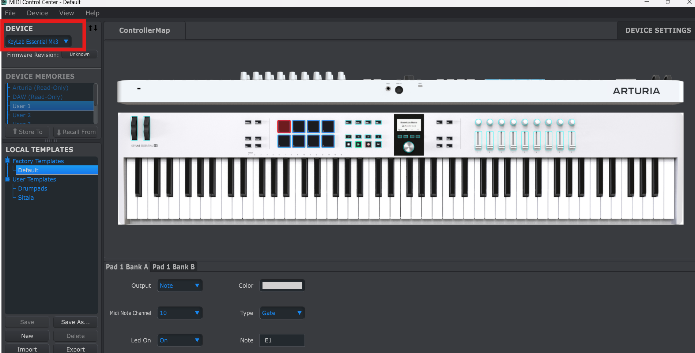
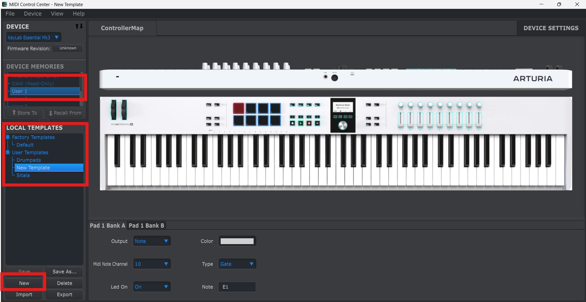
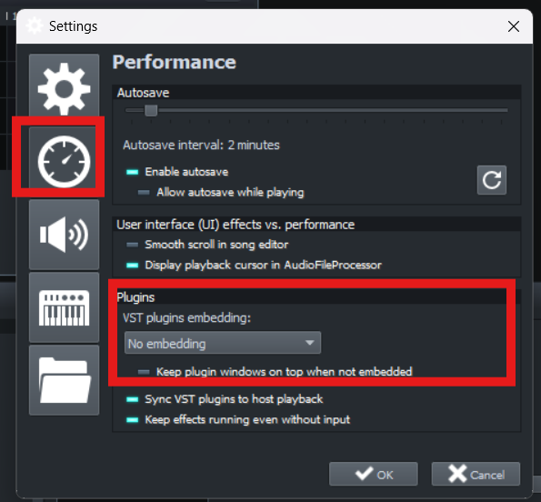
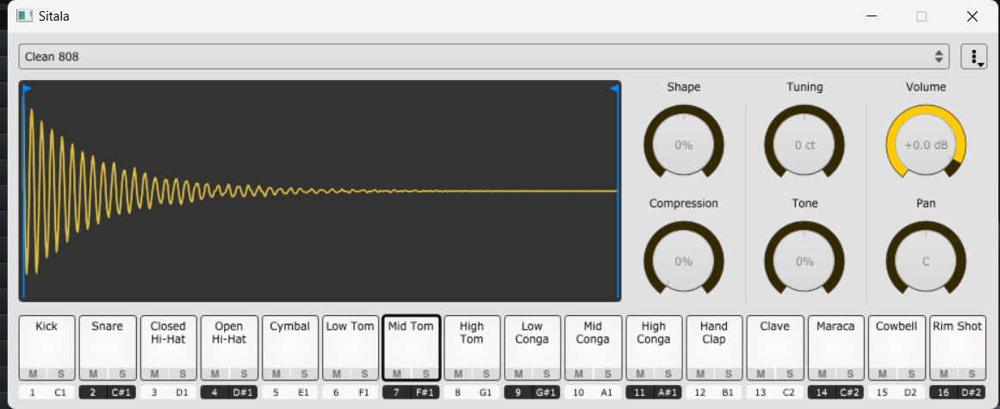

Pleasantries
Roses are red
Violets are blue
I want to play drums using drumpads in LMMS
So do you
What Do I Use?
- I have an Arturia KeyLab Essential mk3
- DAW: LMMS
- OS: Windows 11
Software Needed
- Arturia MIDI Control Center – specific to Arturia (other manufacturers may have their own)
- Sitala – a free drum sampler that works with LMMS
Install both of the above.
Make It Work!
Configuring Arturia MIDI Control Center
- Create a new template using the Arturia MIDI Control Center. You don’t need the device plugged in for this step — just select the device under the Device dropdown. Once loaded, you’ll see the layout on the right.

- Select User 1 for device memory, then click New at the bottom left. Name the template — I’ve called mine Sitala (for obvious reasons).

- Click on each drumpad and assign a note from the menu below the keyboard layout. Below is a mapping that works well for Sitala:
| Drumpad Number | Note |
|---|---|
| 1 | C1 |
| 2 | C#1 |
| 3 | D1 |
| 4 | D#1 |
| 5 | C#2 |
| 6 | D#2 |
| 7 | F1 |
| 8 | B1 |
Configuring LMMS for Sitala
- Open LMMS and go to Edit > Settings. Set VST plugin embedding to No Embedding.
- Restart LMMS.
- Load Sitala into VeSTige by selecting the Sitala DLL. If you installed Sitala in the default location, you’ll find it at:
C:\Program Files (x86)\Steinberg\VstPlugins
- Sitala should open in a standalone window.
- Connect your MIDI controller to Sitala.
- Load samples into Sitala and start jamming.


Resources That Helped Me Write This Blog
- Mapping drumpads in FL Studio
- Sitala with LMMS
- The LMMS Discord community